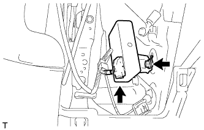

Distance Control Computer Assembly Installation |
| 1. Install Distance Control Computer Assembly |
 |
Connect the connector.
Install the distance control computer assembly with the bolt.
| 2. Fuse Box Opening Cover Installation |
Connect each connector.
 |
Engage the 4 clips and 4 claws, and install the fuse box opening cover.
| 3. Initial Setting Procedure |
Turn IG ON.
Turn the cruise control main switch ON.
Depress the brake pedal. (Brake switch ON)
With the brake pedal depressed, push the cruise control main switch in the +RES direction 3 times within 3 seconds, and check that the buzzer sounds.